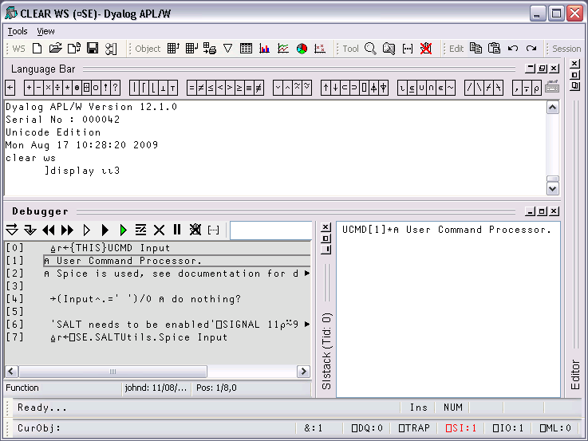
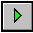
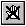
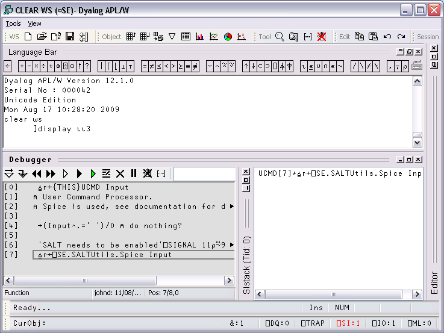
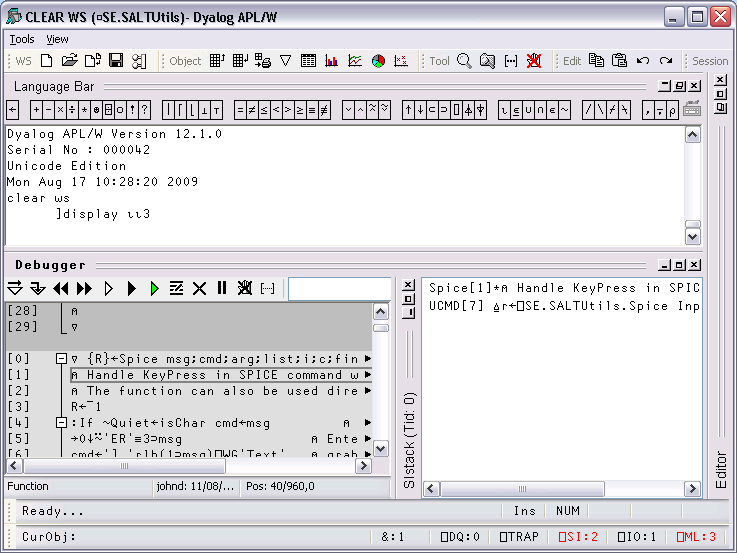
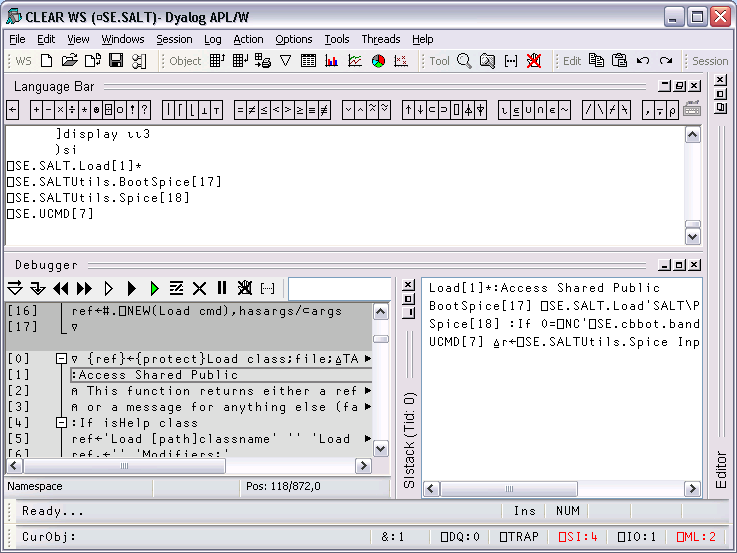
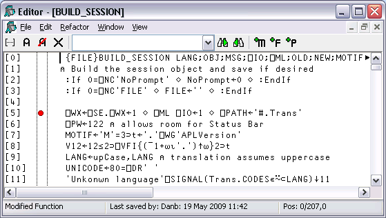

The Tracer is a visual debugging aid that allows you to step through an application line by line. During a Trace you can track the path taken through your code, display variables in edit windows and watch them change, skip forwards and backwards in a function. You can cutback the stack to a calling function and use the Session and Editor to experiment with and correct your code. The Tracer may be invoked in several ways as discussed below.
Firstly, you may explicitly trace a function (strictly an expression) by typing an expression then pressing Ctrl+Enter (TC) or by selecting Trace from the Action menu. This lets you step through the execution of an expression from the beginning.
In the same way as when you execute a statement by pressing Enter, the expression is (if necessary) copied down to the input line and then executed. However, if the expression includes a reference to an unlocked defined function or operator, execution halts at its first line and a Trace window containing the suspended function or operator is displayed on the screen. The cursor is positioned to the left of the first line which is highlighted.
The second way to invoke the Tracer is when you have a suspended function in the State Indicator and you press Ctrl+Enter (TC) on the empty input line. This is termed naked trace. The same thing can be achieved by selecting Trace from the Action menu on the Session Window or by clicking the Trace button in the Trace Tools. However, in ALL cases it is essential that the input cursor is on the empty Input line in the Session.
The effect of naked trace is to open the Tracer and to position the cursor on the currently suspended line. It is exactly as if you had Traced to that point from the Input Line expression whose execution caused the suspension.
The third way to invoke the Tracer is to have the system do it automatically for you whenever an error occurs. This is achieved by setting the Show trace stack on error option in the Trace/Edit tab of the Configuration dialog (Trace_on_error parameter). When an error occurs, the system will automatically deploy the Tracer. Note that this means that when an error occurs, the Trace window will then receive the input focus and not the Session window.
From Version 10.1 onwards, the Tracer is designed to be docked in the Session window.
In previous versions of Dyalog APL, the Tracer was implemented as a stack of separate windows (one per function on the calling stack) or as a single, but still separate, window.
You can disable the standard behaviour by selecting Classic Dyalog mode from the Trace/Edit tab of the Configuration dialog box.
If you do so, you may then choose to have the Tracer operate in multiple windows or in a single window.
These alternatives are discussed later in this Chapter.
The Tracer is implemented as a single dockable window that displays the function that is currently being executed. There are two subsidiary information windows which are also fully dockable. The first of these (SIStack) displays the current function calling stack; the second (Threads) displays a list of running threads.
In the default Session files, the Tracer is docked along the bottom edge of the Session window. When you invoke the Tracer, it springs up as illustrated below. In this example, the function being traced is ⎕SE.UCMD, which is invoked by typing a user-command, in this case ]display.

In the default layout, the SIstack window is displayed alongside the main Tracer window, although this can be hidden or made to appear as a separate floating window, as required.
The Tracer may be controlled from the keyboard, or by using the Trace Tools which are arranged along the title bar of the Debugger window. Note that the button names are solely for reference purposes in the description that follows.
| Button | Name | Key Code | Keystroke | Description |
|---|---|---|---|---|
| Exec | ER | Enter | Executes the current line | |
| Trace | TC | Ctrl+Enter | Traces execution of the current line | |
| Back | BK | Ctrl+Shift+Bksp | Skips back one line | |
| Fwd | FD | Ctrl+Shift+Enter | Skips forward one line | |
| Restart | RM | →⎕LC | Restarts execution of the current thread, closing all its trace windows | |
|  | Restart all | Restarts execution for all threads, closing all trace windows | ||
| Continue | BH | Continues execution of the current thread, leaving Trace windows displayed | ||
| Edit | ED | Shift+Enter | Invokes the Editor | |
| Exit | EP | Esc | Closes the Trace window, exits the current function | |
| Intr | Ctrl+Pause | Interrupts execution | ||
|  | Reset | CB | Clears all break-points (resets ⎕STOP on every function) |
Using the Trace Tools, you can single-step through the function or operator by clicking the Exec and/or Trace buttons. If you click Exec the current line of the function or operator is executed and the system halts at the next line. If you click Trace, the current line is executed but any defined functions or operators referenced on that line are themselves traced. After execution of the line the system again halts at the next one. Using the keyboard, the same effect can be achieved by pressing Enter or Ctrl+Enter.
The illustration below shows the state of execution having clicked Exec 6 times to reach ⎕SE.UCMD[7].

Execution Reached ⎕SE.UCMD[7]
The next illustration shows the result of clicking Trace at this point. This caused the system to trace into ⎕SE.SaltUtils.Spice, the function called from ⎕SE.UCMD[7].
Notice how each function call on the stack is represented by an item in the SIstack window.

Execution Reached ⎕SE.SALTUtils.Spice [1]
The illustration below shows the state of execution having traced deeper into the system.

Execution reached four levels deep
At this stage, the State Indicator is as follows:
)SI ⎕SE.SALT.Load[1]* ⎕SE.SALTUtils.BootSpice[17] ⎕SE.SALTUtils.Spice[18] ⎕SE.UCMD[7]
The point of execution may be moved by clicking the Back and Fwd buttons in the Trace Tools window or, using the keyboard, by pressing Ctrl+Shift+Bksp and Ctrl+Shift+Enter. Notice however that these buttons do not themselves change the State Indicator or the display in the SIStack window. This happens only when you restart execution from the new point.
You can cut back the stack by clicking the <EP> button in the Trace Tools window. This causes execution to be suspended at the start of the line which was previously traced. The same effect can be achieved using the keyboard by pressing Esc. It can also be done by selecting Exit from the File menu on the Trace Window or by selecting Close from its system menu.
The <RM> button removes the Trace window and resumes execution. The same is achieved by the expression →⎕LC. The <BH> button also continues execution, but leaves the Trace window displayed and allows you to watch its progress.
Whilst using the Tracer you can skip to the Session or to any Edit window and back again. While it is docked, you may resize the Tracer pane by dragging its title bar, and you may use the buttons provided to maximise, minimise and restore the Tracer pane within the Session window.
Unless you move it, the cursor is positioned to the left of the suspended line in the top Trace window.
Depending where the cursor is in the tracer window, pressing Shift+Enter (ED) or selecting Edit from the File menu may cause an edit window to open. If the cursor is in the first column of the Trace window, or on whitespace, the Editor is opened on function or operator on top of the stack. If the cursor in on a name, the Editor is opened on the name under the cursor (point-and-edit). With the cursor in any other location, no action is undertaken.
When you finish editing, the window reverts to a trace window with the new definition of the function or operator displayed.
You may also open a new edit window from within the Tracer using point-and-edit.
You can copy text from a trace window to the session for editing and execution or for experimentation.
It is possible to skip from the Tracer to the Session and then re-invoke the Tracer on a different expression.
Break-points are defined by ⎕STOP and may be toggled on and off in an Edit or Trace window by clicking in the appropriate column. The example below illustrates a function with a ⎕STOP break-point set on line [5].

⎕STOP break-points set or cleared in an Edit window are not established until the function is fixed. ⎕STOP break-points set or cleared in a Trace window are established immediately.
You can clear all break-points by pressing the above button in the Trace Tools window. This in fact resets ⎕STOP for all functions in the workspace.
If you select Classic Dyalog mode from the Trace/Edit tab in the Configuration dialog box, the Tracer behaves in the same way as in Dyalog APL Version 8.2. However, the Tracer is not dockable in the Session.
If you select the Classic mode Tracer, you may choose between multiple trace windows or a single trace window using the Single Trace Window option.
The following behaviour is obtained by deselecting the Single Trace Window option.
The following behaviour is obtained by selecting the Single Trace Window option.